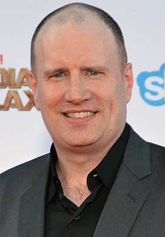
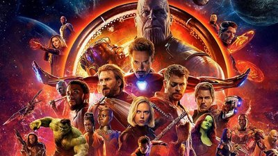
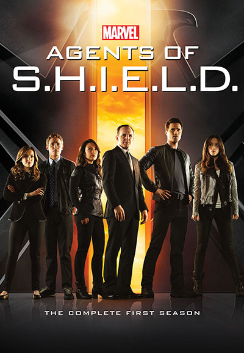
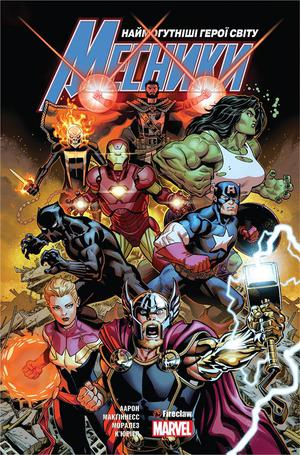

Створення
У 2005 році журнал Variety повідомив, що Marvel Studios почне виробляти свої власні фільми та буде поширювати їх через Paramount Pictures. Раніше студія виступала лише в ролі копродюсерів в екранізаціях придуманих ними персонажів (найбільш відомий семирічний договір з 20th Century Fox). Доходи, отримані від даних угод, керівництво Marvel вирішує вкласти у власну узагальнену франшизу, процес створення якої буде повністю під контролем студії. З цією метою було укладено поновлюваний кредитний договір строком на 7 років з Merrill Lynch на суму $525 млн[4].
Кевін Файгі, президент Marvel Studios «Це одночасно і страшно, і весело. Це щось, чого ніхто ніколи раніше не робив, і саме завдяки цьому духу новизни всі з ентузіазмом приймають такий підхід. Інші режисери не звикли залучати вже ангажованих акторів з інших фільмів, робити прив'язки до певних сюжетних ліній або до місця, але я думаю … всі в підсумку погодилися на це і вважають, що це весело.»
Фільми
У проміжку з 2008 року і дотепер Marvel Studios випустили 33 фільми кіновсесвіту Marvel (Станом на 01.02.24).
Усі вони поділяються на фази, наразі триває п'ята фаза.
Перші три фази разом відомі як «Сага Нескінченності»,
а наступні три як «Сага Мультивсесвіту».
Телесеріали
-
Серіали Marvel Television
До 2019 року телесеріалами займався підрозділ Marvel Entertainment — Marvel Television. Серіали створювалися для різних телеканалів, сервісів «відео на вимогу» та кабельних мереж. Наразі усі проєкти Marvel Television закриті та не отримають додаткових сезонів.
-
Серіали Marvel Studios
Починаючи з 2019 року серіалами кіновсесвіту Marvel почала займатися напряму студія Marvel Studios та її новоутворений підрозділ Marvel Studios Animation. Через це телесеріали стали більш пов'язаними з фільмами кіновсесвіту, а також серіали стали частиною фаз та саг, як і фільми.
Комікси
З 2008 року видавництво Marvel Comics почало створення коміксів, які доповнюють новостворений в той час
кінематографічний всесвіт. Комікси, опубліковані Marvel, пов'язують фільми й серіали та призначені для того,
щоб розповісти додаткові історії про наявних персонажів і створити зв'язки між проєктами студії.
Комікси-адаптації частково переказують події фільмів і доповнюють їх новими сценами, які Marvel хотіли б бачити в
«офіційному каноні», але з яких-небудь причин не зняли їх.
У 2012 році для збереження «реткона»
Marvel розділили комікси на два напрямки — що входять до безперервної хронології кіновсесвіту та комікси,
натхненні фільмами та серіалами, які не є канонічними[14]. Частина коміксів другого напрямку найчастіше є
рекламою відомих брендів (наприклад, Lexus та Audi).